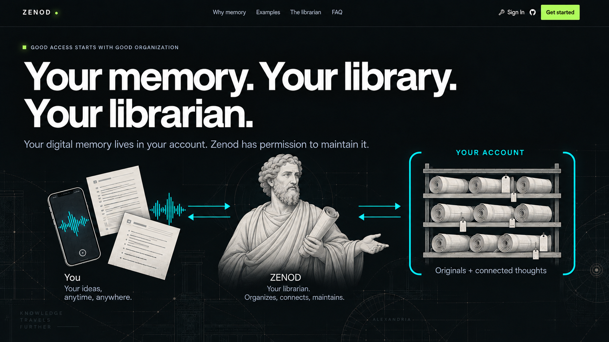

1. Your memory. Your library. Your librarian.
Your digital memory lives in your account. Zenod has permission to maintain it.

Concept 01 · Full-resolution PNG
2. Better context. More useful intelligence.
Your experiences become context. Connected context gives your agents more to work with.
![One clear three-layer stepped conceptual pyramid, NOT Egyptian architecture. Bottom broad layer ORIGINAL EVIDENCE with voice waveform, source page, image; middle CONNECTED MEANING with three related notes Preferences, Projects, Relationships linked by fine cyan lines; top USEFUL WORK with a modern plan sheet labeled Plans · Decisions · Work. Open bracket to bottom two layers labeled Maintained by Zenod; top labeled Your connected agents. Illustrate in soft flat Greek/editorial style; no bust necessary. Show how layers build upward, not a decorative network.](02-value.png) Concept 02 · Full-resolution PNG
Concept 02 · Full-resolution PNG
4. Keep the original. Connect the meaning.
Separate moments become a coherent collection. Each thought leads back to its source.
![Left three input fragments with legible short text: Voice: I loved the light; Screenshot: flat listing; Note: The commute matters. Middle one soft Alexandrian librarian quietly connecting them. Right a coherent open collection titled Finding a home, with What matters to me, Places considered, Open questions. Fine source links go to preserved originals along a separate lower baseline, visibly retain all three original fragments. Light and Commute appear as linked preferences. Not generic folders, no sources vanishing. Calm clear explanatory layout.](04-organize.png) Concept 04 · Full-resolution PNG
Concept 04 · Full-resolution PNG
5. Ask the librarian. Get back to the source.
Find the thought you remember vaguely. Return to what you actually said.
 Concept 05 · Full-resolution PNG
Concept 05 · Full-resolution PNG
6. Every agent. A shared starting point.
Use your context. Save useful findings back to your library.
![One dominant modern agent conversation mockup header Codex · Illustrative workflow. Three readable successive exchanges: user Find my flat-viewing notes. result Retrieved 3 source notes. user Compare them against my priorities. result comparison headings Light, Commute, Open questions. user Save this comparison to my memory. result Saved with source links. Put a small persistent library symbol at right joined with subtle cyan retrieve/save arrows, not a second large panel. Explicit user save must be visible. No invented actual tool IDs, no claim screenshot. Main visual is readable conversation.](06-agents.png) Concept 06 · Full-resolution PNG
Concept 06 · Full-resolution PNG
7. Keep the books. Replace the librarian.
Your originals remain yours. A future librarian can build a new understanding.
![Stable bottom foundation of three original artifacts voice, transcript, document inside a single open cyan bracket YOUR ACCOUNT · ORIGINALS UNCHANGED. Above it, left one soft illustrated Zenod librarian token labeled Zenod, a clear change arrow to right a minimal neutral abstract tool silhouette labeled Next librarian (no second human face). From same original evidence, lines rise to two small meaning collections labeled Current understanding and Rebuilt understanding, associated with respective librarians. Stable sources remain clearly untouched. Small caption Conceptual replaceability · not a one-click migration. Avoid giant faces or complicated networks.](07-replace.png) Concept 07 · Full-resolution PNG
Concept 07 · Full-resolution PNG
8. Open source. Run it your way.
Inspect the code. Run your librarian—or choose managed hosting.
![One shared soft illustrated librarian/engine at center labeled Same open-source engine, branching to two equally clear minimal infrastructure symbols Self-host / Your infrastructure and Managed / Operated for you. A single user-owned papyrus library below remains separate from both hosting environments, labeled Your library stays yours. No cloned faces. Bottom two website actions View on GitHub and Explore setup. Tiny note Hosting and model costs apply. No prices, no free promises, no identical packaging claim. Not pricing cards; an open uncluttered choice diagram.](08-choice.png) Concept 08 · Full-resolution PNG
Concept 08 · Full-resolution PNG